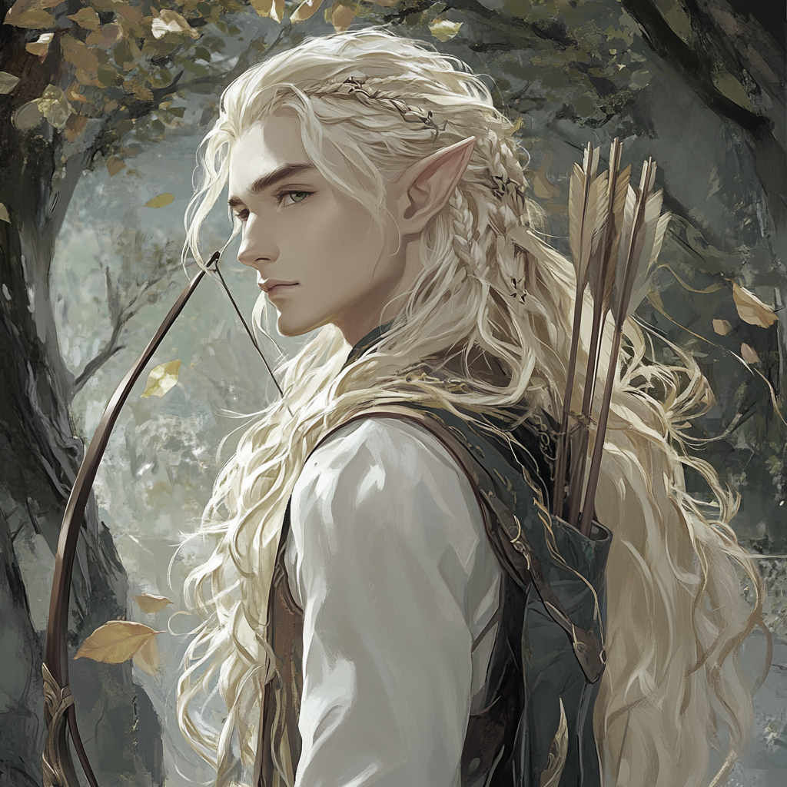
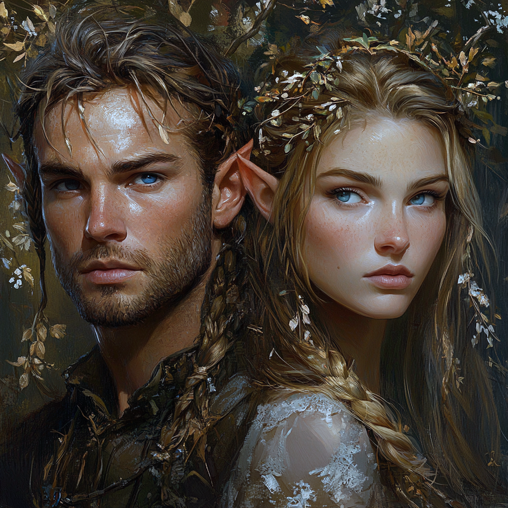
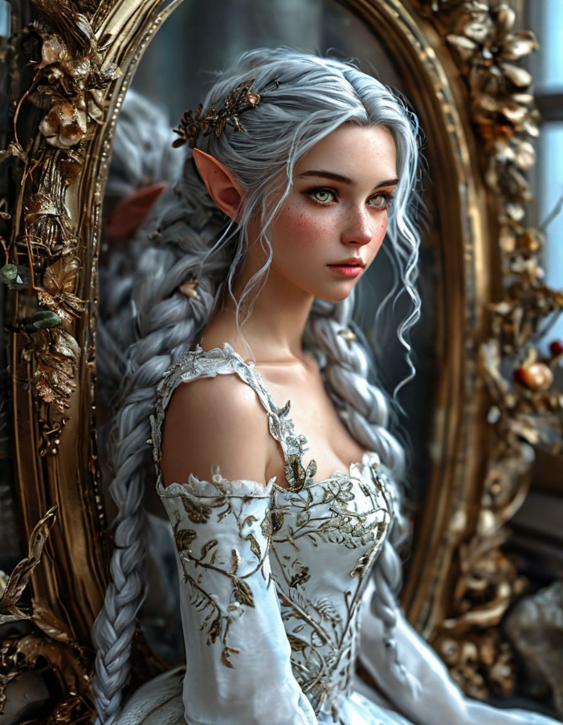
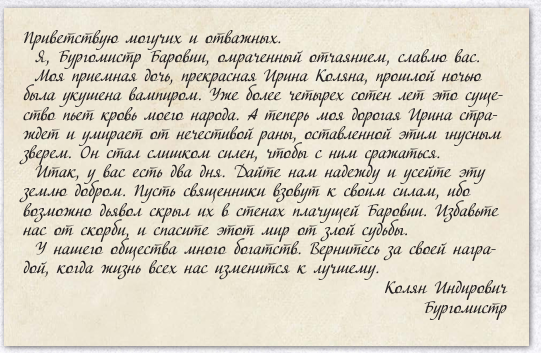

«Моя история начинается с предательства. Моя история начинается с
насмешки судьбы. Моя история начинается в тёмном эльфийском лесу, у
ствола вековой ели, с маленькой плетёной корзинки и обрывка книжного
листа, на котором нетвердой рукой написано одно лишь имя — Зираэлла
Ларус.»
✦ ❦ ✦
Пролог. Корзинка у ели
Наверняка, моя история похожа на сотни, если не тысячи других. Моя
история не заканчивается счастливым моментом. Как и не начинается со
слёз радости родителей, впервые увидевших своё долгожданное дитя. Моя
история начинается даже не с всхлипывающего вдоха новорождённого или
сладостного стона влюблённых, зачавших дитя.
Моя история начинается с предательства. Моя история начинается с
насмешки судьбы. Моя история начинается в тёмном эльфийском лесу, с
небольшой плетённой корзинки, стоящей у ствола вековой ели. В корзинке
небольшое лоскутное одеяло, в которое завернут спящий младенец. В
крохотном кулачке младенца зажат обрывок книжного листа, на полях
которого нетвердой рукой сделана одна единственная запись — «Зираэлла
Ларус».
«Кто этот младенец? Откуда она взялась посреди тёмного ночного леса?
Как долго она находится здесь одна? Кто принёс её и оставил одну на
волю судьбы?». Именно такими вопросами задавался мой названный отец,
нашедший меня у ели, в окружении белок, ранним осенним утром.

Естественно, Сильварис не бросил младенца посреди леса умирать, а
забрал к себе в семью. Своих детей у него не было — так его
единственный сын погиб при защите города от волны нежити, будучи
совсем молодым. Торвальд, так звали его сына, был высоким, красивым
эльфом с лицом героя. Я видела его изображения — Джана показывала мне
их тайком, так как родителям слишком больно о нём вспоминать. Он был
прекрасен, его характер был твёрд как сталь, он всегда держал своё
слово и стремился к торжеству справедливости. Он не был трусом, а бой
для него был словно танец. Таким описывала его Джана, его
несостоявшаяся невеста. В её сердце навсегда осталась незаживающая
рана. Но когда она рассказывала мне о нём, её лицо лучилось такой
любовью и счастьем, что становилось неловко.
Глава I. Сильварис и Касандра
Когда Сильварис пришёл домой ранним туманным утром с корзинкой, в
которой лежала малышка с фиолетовыми глазами и длинными ушами, его
жена, Касандра, была обескуражена. Сперва она предлагала отнести
девочку к жрецу и пусть он решает её судьбу. Но Сильварис уже принял
решение оставить девочку и воспитать её как родную дочь. Со временем
сердце Касандры смягчилось, но никогда она не воспринимала девочку как
дочь. Она не обижала её, но полюбить так и не смогла.

Сильварис был эльфом в возрасте, седина уже коснулась его висков, но
своей красоты он не утратил. Его волевой подбородок напоминал людской.
Его голубые глаза светились теплом, но умели в мгновение затянуться
льдом. Он был наидобрейшим эльфом, но всегда с капелькой грусти. Как
бы ни любил он эту жизнь, засыпал и просыпался он с мыслями о
Торвальде…
По роду деятельности Сильварис был целителем. Он многое знал о травах
и их полезных свойствах, мог вылечить разную хворь. Множество ранних
утренних прогулок по лесу мы провели с ним за сбором ягод, трав, жуков
для пополнения его запасов. Иногда он позволял мне помогать ему во
время приготовления зелий или мазей, объясняя смысл своих действий и
какой эффект они произведут. Я смотрела на него горящими глазами, и
моей мечтой было стать великой целительницей. Я представляла себя
всемогущей, сражающейся с хворью и даже бросившей вызов самой смерти!
Как жаль, что ничему из этого не суждено было сбыться…
Сильварис решил, что до вступления во взрослую жизнь он будет
оберегать маленькую эльфийку и хранить тайну её происхождения. Никто в
городке Эларнодор не знал до конца, откуда она взялась. Сильварис
говорил всем вокруг, что Зираэлла была дочерью его дальнего знакомого,
который внезапно погиб. Но время шло, Зираэлла взрослела, и различия
между ней и лесными эльфами становились всё отчётливее.
Глава II. Школа и библиотека
Моё детство было наполнено радостью. Я считала Сильвариса и Касандру
родителями и вовсе не замечала многих несостыковок и грустных взглядов
мамы. Я старалась быть прилежной и не доставлять родителям хлопот.
Впервые я столкнулась с несправедливостью этого мира в эльфийской
школе. Мама, то есть Касандра, была учителем в школе. Она преподавала
молодым эльфам основы грамоты. Терпеливо учила нас буквам и
правильному произношению, а также красивому письму. Сначала я
обучалась наравне со всеми. Всем основам наук мира я научилась. Но при
дальнейшем обучении я заметила, что мне дают однотипные задания, а
вместо учебника у меня сборник мифов и сказок.
Конечно, Касандра старалась давать мне новые книги, чтобы мне было
интересно, но однажды мне это надоело, и я потребовала учебник как у
всех. Прямо на уроке, задав вопрос на весь класс (я думала, что так
застану Касандру врасплох и ей ничего не останется, как выдать мне
учебник), я получила вместо заветного учебника испепеляющий взгляд
мамы и фразу: «Твоё обучение на этом окончено».
Домой я шла в слезах. Я не понимала, что я сделала не так, ведь мне
так нравилось учиться. Я рыдала на крылечке нашего дома и мечтала
повернуть время вспять. Я так жалела, что попросила этот учебник! В
тот момент мне казалось, что обрывков фраз учителя и других ребят было
бы достаточно… Но время вспять не повернуть.
Проплакав довольно долго, я решила, что раз я больше не хожу в школу,
то пойду в библиотеку и сама научусь всем наукам мира! Стану великой
учёной и утру нос всем в школе!
Хах, как же глупа и самонадеяна я была! Все книги, которые я читала,
брала моя мама или папа. А сама я никогда не была внутри библиотеки. И
почему-то меня это не смущало.
Подойдя к башне библиотеки, я испытала волнение и восторг,
представляя, как буду днями напролёт осваивать сложнейшие трактаты и
постигая тайны мироздания… Только представьте: ты один среди огромного
множества древних фолиантов и свитков, миллионы трудов в твоих руках,
карты неба и далёких земель… Вековая пыль щекочет нос и кружится в
лучах света, проникающих сквозь окна башни… На столе горит свеча,
воздух спёртый и тяжёлый, а ты увлечена новой главой истории этого
мира…
Такие мысли витали в моей голове, пока я поднималась по ступеням башни
к хранителю библиотеки. Я слегка даже подпрыгивала от предвкушения! И
вот он, заветный стол хранителя… Приблизившись к нему и открыв было
рот, чтобы получить разрешение на изучение книг, — я услышала:
«Зираэлла?! Что ты здесь делаешь?! Тебе нельзя здесь находиться,
немедленно вернись домой или в школу!». Я видела взволнованный и
растерянный взгляд Эльвара, и множество вопросов остались
невысказанными, но… я почувствовала себя настолько уставшей, что
просто ушла из библиотеки. Это было похоже на удар всем телом о гладь
воды озера, когда прыгаешь с отвесной скалы. Мне казалось, что из меня
вышибли не только дух, но и разум. Не было мыслей, не было вопросов,
не было ничего, кроме жуткой пустоты внутри…
Вечером, лёжа в своей кровати и смотря немигающим взглядом в потолок,
я слышала, как внизу ругались родители. У меня не было даже желания
прислушаться. Я хотела лишь одного — спасительного забытия сна. И
вскоре я уснула.
Глава III. Серебряный дракон
В ту ночь мне снился тёмный лес. Я шла по нему, и дорожку освещал
лунный свет. Мне не было страшно, хоть место и было незнакомым. Меня
будто что-то влекло вперёд. Я вышла на край утёса. Передо мной
раскинулся бескрайний зимний лес, а вдалеке были видны шпили башен
великолепного замка. Меня посетило чувство, что моё место там, в
замке. Там мой дом… Надо мной закружил серебряный дракон. Но я
испытала такое счастье, будто встретилась с близким другом после
длительной разлуки! Это был МОЙ дракон!!! Дракон приземлился недалеко
от меня и пригнулся — то ли приветствуя, то ли приглашая взобраться на
него.
Серебряный дракон стал частым гостем моих снов. На протяжении
множества лет, в моменты сильных душевных переживаний, он был рядом. Я
всегда думала, что он существует, и очень надеялась на встречу.
Глава IV. Годы в тени
Время шло, я взрослела. Меня всё больше отдаляли от всего, что могло
быть тайной лесных эльфов. Всё чаще я замечала в свою сторону взгляды,
полные презрения и сочувствия. Я не понимала природы этих взглядов и
старалась не обращать на них внимания.
Отец всё реже позволял мне помогать ему и всё реже делился со мной
знанием. В школу путь мне был закрыт, в библиотеке меня прогоняли,
поэтому времени у меня было предостаточно. Я бродила по нашему
городку, уходила за его пределы — исследовать лес и ближайшие
окрестности. Оттачивала своё мастерство владения луком и мечами, но
некому было меня наставить и подсказать… Иногда я мечтала, что
Торвальд был моим старшим братом и тренировал меня… А ночами я ждала
возвращения моего дракона.
Так я проводила день за днём, месяц за месяцем, год за годом…
Глава V. День совершеннолетия
Сидя в ветвях дуба, я наблюдала за паданием листа. Когда дул ветер,
листья дружно кружились в причудливом танце, словно в предсмертной
агонии. Мой разум был пуст. Это был день моего совершеннолетия. Мне
нужно было подготовить платье и решить, чьей ученицей я хочу стать, а
я сидела и смотрела на опадающие листья.
Снизу меня окликнула Лира. Моя единственная подруга. Пора было
готовиться к ритуалу инициации. Я спустилась с дерева и нехотя
поплелась за ней. Лира была единственной, кто относился ко мне без
скрытых мыслей. Она была моей лучшей и самой близкой подругой.
Мы вернулись домой. Платье подготовила мама. И оно было прекрасно,
действительно. По правилам, это было белое платье длиной до пола, с
длинными рукавами. Украшено оно должно было быть лишь золотистой
вышивкой листьев. Но Лира вышила на нём ещё и ласточек. Ласточка — это
моё имя. И это ещё одна насмешка судьбы. Ведь ласточка так прекрасна,
она свободна и может летать…
Лира усадила меня на стул и начала заплетать мне косы. Расчёсывая мои
длинные серебряные волосы, она болтала и болтала о предстоящем ритуале
и о том, как мне повезло, что я получу свободу взрослого эльфа, а ей
ждать ещё целый год.

В комнату вошли отец и жрец нашего племени. Пора идти на инициацию.
Отец остался дома, а я пошла следом за молчаливым жрецом.
Я была совсем рассеяна и не особо воодушевлена предстоящим действом,
поэтому даже не сразу заметила, что мы идём не на главную площадь, а
совсем в противоположную сторону — к воротам. Когда я задала вопрос
жрецу, он лишь грустно взглянул на меня и произнёс: «Скоро ты всё
узнаешь».
Мы подошли к вратам, где он развернулся и грустно взглянул на меня.
«Пришла пора открыть тебе правду, Зираэлла Ларус. Как ты понимаешь,
никакой инициации ты проходить не будешь. Поскольку ты не лесной эльф.
Наверняка ты видишь в себе отличия. И да, предупреждая твои вопросы —
твои родители в курсе. Сильварис нашёл тебя в лесу с единственным
листом из книги, на котором было написано твоё имя. Это всё, что нам
известно о тебе. Твоя раса — высший эльф. Это видно по твоему цвету
кожи и волос. Цвет твоих глаз намекает, что один из твоих родителей
владел магией. К сожалению, это всё, что я могу тебе рассказать».
Краем глаза я заметила, что кто-то приблизился к нам. Жрец говорил и
говорил, объясняя, почему я была изгоем всю свою жизнь и почему ко мне
так относились всё время. Но я, кажется, не слушала его, так как моё
внимание привлекло существо, стоящее справа от меня. Оно было
удивительным: тело его было человечьим, голова напоминала зайца. А
крылья и лапы были драконьи.
Оно протянуло мне подвеску в виде головы зайца. Ласково улыбнулось и
растворилось в воздухе.
Глава VI. Годы скитаний
Мне разрешили остаться в городе и жить столько, сколько захочу. Но я
не могла обучаться никакому ремеслу, не могла стать ученицей мага или
целителя, не могла выйти замуж.
Пару лет я всё же провела в городе, в доме родителей. Отец рассказал
мне всё, что помнил о том, как нашёл меня. Во мне копилось множество
вопросов. Однажды я приняла решение покинуть эльфов и пойти искать
ответы.
Я странствовала по городам, посёлкам, деревням. Люди, эльфы, дварфы,
орки и другие встречались на моём пути. Сотни миль я прошагала в
поисках ответов. Прочла тысячи книг и свитков. Задала миллионы
вопросов. Но нигде, никто не слышал фамилию Ларус.
Когда мне казалось, что я утратила надежду, я забрела в небольшой
людской городок под названием Линдом. В таверне, сидя вечером за
угловым столиком, я обратила внимание на странную компанию. За одним
столом сидели дварф, полуорк и молодая дроу. Я бы даже назвала её
ребёнком. Они выпивали и общались между собой так, будто были знакомы
целую вечность. Моё сердце заныло от одиночества, и я никак не могла
отвести взгляда от них. В глазах стояли слёзы, а губы растянулись в
улыбке. Наверно, именно моё странное выражение лица и заставило дварфа
подняться из-за стола и подойти ко мне.
Сперва я решила, что случится потасовка. А поскольку мне совсем не
хотелось снова ночевать под открытым небом — я решила встать и уйти.
Но дварф, наоборот, был вежлив и учтив. Попросил не пугаться его и
продолжить свой ужин.
«Барундур.» — представился он. Было невежливо молчать, и я, немного
осиплым от долгого молчания голосом, ответила: «Зираэлла». Он
улыбнулся и предложил подсесть к ним за стол, ведь я наверняка много
путешествую, а значит, нам будет о чём поговорить. Я колебалась.
Какая-то незримая сила так тянула меня к ним, будто кто-то прописал
нашу встречу в книге судеб. Я наблюдала за полуорком и молодой дроу
одним глазом, стараясь не прерывать беседу с дварфом. И тут я заметила
нечто, что позволило принять молниеносное решение присоединиться к ним
— подвеску в виде головы зайца.
Так я встретила своих товарищей — дварфа Барундура, полуорка Шкрека и
причудливую дроу Эларайн. А дальше нас ждали множество приключений и
неизведанных земель…
Глава VII. Дом у костра
Дом… Мудрые говорят, что дом — это не место, а состояние. Что дом —
это чувство защищённости и уюта рядом с людьми. Дом — это твои
близкие. Получается, у меня никогда ещё не было дома. Дома как места.
Когда я жила у Сильвариса, я думала, что там мой дом. Мне хотелось
возвращаться в этот небольшой двухэтажный домик, увитый плющом. Мне
было уютно и спокойно в моей небольшой светлой комнате на втором
этаже, окно которой выходило на обрыв утёса, с которого
просматривалась бескрайняя даль неизведанных миров. Я чувствовала
удивительное счастье, спускаясь по утрам на кухню, взбираясь с ногами
за стол и жуя завтрак. Мне казалось, что мастерская папы, где он
готовил снадобья и мази, имеет аромат, который я могла бы назвать
родным.
Но, спустя много месяцев странствий, я осознала, что это был скорее
временный приют. Место, где моя душа и тело достаточно окрепли для
поиска настоящего дома.
Я лежу у костра и пишу эти строки. Справа от меня, чуть поодаль,
Барундур возносит молитвы своему странному богу и поминает своих
павших товарищей. Интересно, как же так устроена его слепая вера, что
она не пошатнулась после всего, что с ним произошло? Спросить напрямую
я не решаюсь, а сам он редко когда говорит о минувших днях, своих
братьях или наставнике и о том, что случилось.
Слева, в тени дерева, Эл играет со своими кубиками. Иногда она совсем
как ребёнок. Часто я вижу в ней молодого львёнка, который злится на
весь мир и пытается напугать всех своим сильным рыком, но мне слышится
лишь мяукание. Её история наполнена болью, ненавистью и затаённой
злобой. Дроу, бежавшая из своего мира на поверхность. Хотя я могу
смело сказать, что она точно перегрызёт глотку любому, кто посягнёт на
кого-то из нашей компании. Хоть она по факту ещё подросток, она уже
поняла этот мир куда лучше многих.
Через танцующие языки пламени я вижу задумчивый профиль Шкрека. Его не
часто увидишь серьёзным или, тем более, задумчивым. Почему-то мне
кажется, что сейчас он размышляет о своей семье. Он ничего не знает о
том, где и как его родные: мама, папа и брат. Я вижу в нём глубокую
привязанность к ним и его тоску по ним. Надеюсь, с ними всё в порядке,
и однажды Шкрек вновь обнимет маму, поспорит с братом и смело встретит
взгляд отца.
Сейчас, именно здесь, в нашем ночном лагере, лёжа у костра и делая
записи в дневнике, я ощущаю это неописуемое чувство. Чувство уюта и
покоя. Ощущение дома. Мой дом — это мои товарищи. И вовсе не важно,
где мы находимся — посреди ночного леса, в бегах от городской стражи
или на берегу океана. Главное, что мы вместе.
Наконец-то я обрела чувство дома.
Глава VIII. Туман Баровии
Очередной тяжёлый день нашего пути подходит к концу. Мы остановились
на ночлег в пролеске около дороги. Барундур разводит костёр, Шкрек
носит ему хворост, Эл немного привередничает, а я осматривала
местность. После мы со Шкреком удачно поохотились, Барундур приготовил
рагу, и мы все вместе с аппетитом поели незамысловатое варево.
Готовимся к отдыху. Завтра мы продолжим путь в город, где, по слухам,
происходит нечто странное. Надеемся разузнать и по возможности помочь.
Странный туман образовался вокруг нашего лагеря. Такое чувство, будто
он взялся из ниоткуда и заполонил собой всё пространство. Лес кажется
чужим и незнакомым. Мы все проснулись от странного чувства. Как будто
сквозь туман за нами кто-то наблюдал.
Мы немного осмотрелись и пришли к выводу, что это другое место, не то,
в котором мы остановились на ночлег. Лес выглядит иначе, дорога
намного ближе. И ещё этот вездесущий туман…
Приняли решение сняться со стоянки и двинуться по дороге. Возможно,
что-то прояснится.
Навстречу нам из тумана скачет всадник на лошади. Решив не рисковать,
мы отошли с дороги немного в лес и наблюдали за приближающимся
всадником. Интересно, что это оказался скелет рыцаря, верхом на
скелете лошади. На нём самом и его лошади сохранились остатки боевого
облачения. В руке скелет держал фонарь. Интересно, он пытался освещать
себе путь? Он не был враждебным и даже оказался весьма разумным для
беседы. Тем не менее, ничего важного от него мы не смогли узнать.
Видимо, после смерти он сохранил лишь долю разума и даже не помнил
своего имени.
Продолжаем путь по дороге. Внезапно учуяли запах гнилого мяса.
Барундур уверял, что воняет какой-нибудь сдохший олень. Решила скрытно
углубиться в лес и посмотреть. Нашла два трупа. У одного из них,
выглядевшего как посыльный, было письмо. Вернувшись, рассказала об
этом ребятам. Барундур возмущался, что я неблагоразумна, тайком
уходить в ночной лес в неизвестном странном месте. В чём-то он прав.
Но чувствую удовлетворение, найдя письмо. Я не упустила что-то важное.

Столкнулись с людьми на тележке, которые согласились нас подвезти до
ближайшей деревушки. От них мы узнали, что находимся в Баровии.
Правитель данных земель — Страд фон Зарович. Парни, что везли нас в
тележке, были ярко разодеты и причудливо выглядели, словно скоморохи
на ярмарке. Представились народом вистани. Говорят, что у них имеется
зелье, которое позволит нам выбраться из этих земель. Но, кажется,
врут.
С их слов, периодически сюда попадают люди, а выбраться отсюда
возможно только с согласия правителя этих земель, либо при помощи их
зелья. Как утверждают, сами они беспрепятственно входят и выходят.
По дороге распевали похабные частушки. Шкрек пытался запомнить и
подпевать. Выглядело это комично.
Пока добирались, успели сразиться с волками. Одного из вистани сильно
ранили. За помощь нам предложили взять себе что-нибудь из фургона.
Взяли зелье лечения. Эл, как обычно, не удержалась и стащила у них
пять бутыльков с неизвестной жижей.
Добрались до ворот деревни мы ранним утром, можно сказать ещё ночью.
Стражники не хотели нас пускать, боялись, что мы окажемся нежитью или
вампирами. Что тут происходит, в этом мире?
На воротах стоял мужчина в развивающемся плаще. Сначала молча за нами
наблюдал, затем произнёс: «Добро пожаловать» — и, взмахнув плащом,
обратился в летучую мышь. Эл бросила в него одну из украденных
бутылочек. Кажется, в ней была обычная вода.
Войдя в деревню, нашли таверну, чтобы переночевать. Вообще выглядит
здесь всё довольно странно. Как будто пропитано страхом.
В таверне познакомились с молодым мужчиной, Исмарком. Точнее, как
познакомились… Сидел он себе угрюмо в углу, выпивал в одиночестве. Мы
же стояли у стойки трактирщика, узнавали про еду и комнаты. В центре
за столом сидели три девушки, судя по их цветастой одежде — вистани.
Наша неугомонная Эл решила разговорить парня и узнать, чего он такой
хмурый. Подсела к нему за стол и начала разговор. Предлагала
познакомить его с вистани, на что получила ответ, что он их буквально
ненавидит, так как они «Шпионы Страда».
Узнав, что мы искатели приключений, он пригласил нас в свой дом и
поведал, что нуждается в помощи. В письме, которое я нашла, говорилось
о его сестре — Ирине. Её действительно укусил вампир. А вот его
отец-бургомистр умер несколько дней назад. И им нужна помощь в
организации его похорон.
Познакомились с Ириной. Приятная молодая девушка, с красивыми красными
волосами. Рассказывает, что не так давно к их дому стала стекаться
всякая нежить, а после она была дважды укушена Страдом, но плохо
помнит детали. Их отец не выдержал такого напряжения и умер пару дней
назад. Но, поскольку из-за интереса Страда к Ирине в деревне их боятся
и не долюбливают, у них имеются трудности с похоронами.
Исмарк просит нас о помощи — проводить Ирину в безопасное место, где
Страд не сможет ей навредить. Но Ирина упёрто отказывается уходить,
пока не будет похоронен отец.
Посовещавшись, решили помочь ребятам. Заодно разузнаем побольше о
месте, куда мы попали, и о том, как отсюда выбраться.